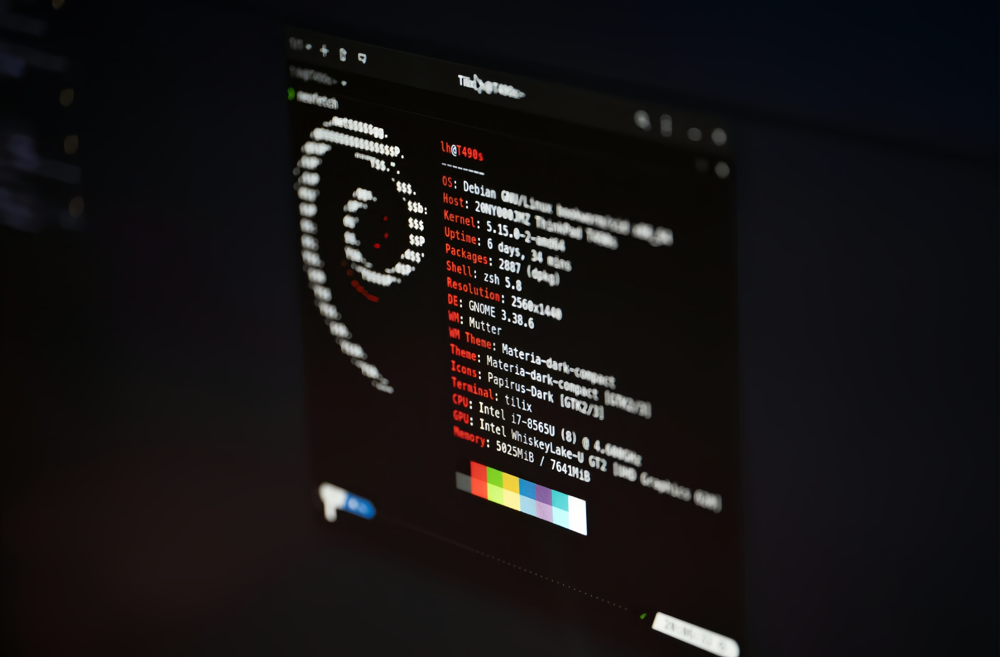

Networking
MikroTik Network Configuration
Praktik konfigurasi jaringan menggunakan MikroTik dan Winbox, meliputi IP Address, DHCP Server, DNS, NAT/Masquerade, firewall dasar, dan pengujian konektivitas.
MikroTikWinboxNetwork
Menguasai administrasi jaringan komputer, konfigurasi MikroTik & Server Linux, serta pengembangan antarmuka web modern yang responsif dan berkinerja tinggi.
Passionate dalam Mengembangkan Skill Teknologi & Kreativitas Digital
Saya adalah pribadi yang mau belajar, bertanggung jawab, dan terus mencoba hal baru. Bagi saya, kemampuan tidak hanya didapat dari teori, tetapi juga dari pengalaman dan praktik.
Saya ingin terus mengembangkan kemampuan di bidang Teknik Komputer dan Jaringan serta editing, sehingga ke depannya dapat memiliki keterampilan yang bermanfaat dan siap menghadapi dunia kerja maupun pendidikan yang lebih tinggi.
Arsitektur terstruktur & maintainable.
Tampilan nyaman di berbagai layar.
Optimasi kecepatan dan pengalaman pengguna.
Komunikasi dan kerja sama.
Teknologi & Tools Yang Saya Gunakan
Computer Operation
Network Infrastructure
Infrastructure & Design
Karya & Proyek Terbuka
Praktik konfigurasi jaringan menggunakan MikroTik dan Winbox, meliputi IP Address, DHCP Server, DNS, NAT/Masquerade, firewall dasar, dan pengujian konektivitas.

Praktik instalasi dan konfigurasi Debian Server melalui VirtualBox, termasuk konfigurasi IP, SSH, remote access menggunakan PuTTY, serta persiapan web server.
Membangun website portfolio menggunakan HTML, CSS, dan JavaScript dengan responsive layout, animasi, serta elemen visual interaktif.
Pengalaman & Pendidikan
SMK Ma'arif NU Tirto • TKJ
Mempelajari dasar jaringan komputer, perakitan dan troubleshooting PC, sistem operasi, MikroTik, server Linux, serta dasar pengembangan web.
Lab / Pembelajaran TKJ
Melakukan praktik konfigurasi MikroTik menggunakan Winbox, termasuk IP Address, DHCP Server, DNS, NAT/Masquerade, firewall dasar, dan pengujian konektivitas jaringan.
Proyek Pribadi & Pembelajaran
Mempelajari HTML, CSS, dan JavaScript serta mengembangkan website portfolio dan eksperimen antarmuka web.
Punya Proyek Impian? Hubungi Saya